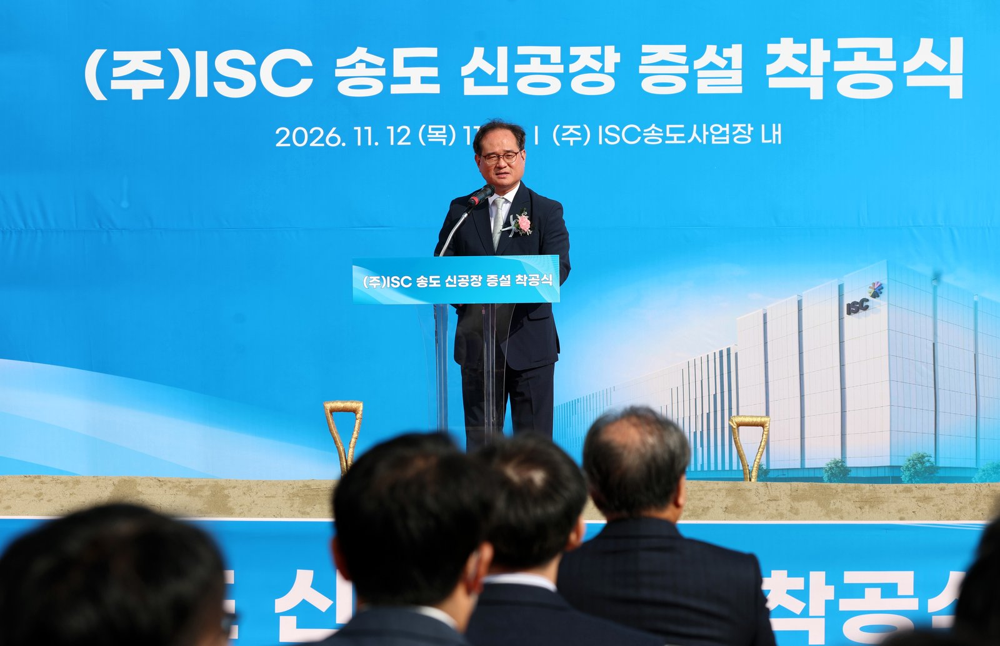
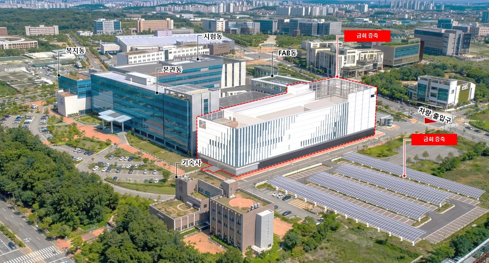

[인천경제] 아이에스시, 송도에 AI 반도체 테스트 소켓 신공장 착공
송도 증설 연면적 1만1625㎡, 2028년 운영 목표
베트남 법인 297억원 출자, 2029년 생산능력 최대 500만개 계획
1~9월 매출 2130억원, 1년 새 44% 증가
AI경제저널=김갑봉 기자 | 반도체 테스트 소켓 기업 ㈜아이에스시(ISC)가 12일 인천 송도사업장에서 신공장 착공식을 열었다. 회사는 6월 9일 성남·안산 등 국내에 흩어진 생산시설과 핵심 연구개발 기능을 이곳으로 모으겠다고 언론에 밝혔다.
인천경제자유구역청(인천경제청) 보도자료를 보면, 착공식은 송도 지식정보산업단지 안 사업장(연수구 벤처로 82)에서 열렸다. 김정렬 아이에스시 대표이사와 김종철 인천경제청장 등 100여명이 참석했다.

연구와 제조를 함께 하는 증축동
새 공장은 기존 송도사업장에 짓는다. 증설 면적은 건축 연면적 기준 1만1625㎡이고, 4층 증축동 등이 들어선다. 차세대 인공지능(AI) 반도체 연구시설과 테스트 소켓 제조시설을 함께 둔다.
인천경제청 보도자료를 보면, 회사는 2027년 안에 공사를 마치고 2028년부터 운영할 계획이다. 투자비는 약 350억원이라고 회사가 6월 9일과 착공 당일 언론에 밝혔다.
테스트 소켓은 칩과 검사 장비를 이어 칩의 전기적 특성을 시험하는 부품이다. 회사는 분기보고서에 실리콘 고무로 만든 엘라스토머(elastomer, 탄성 소재) 소켓이 매출의 80%이고, 이 시장 세계 점유율은 90% 수준으로 평가받는다고 적었다.

성남·안산·하노이 세 제조 거점
아이에스시는 2001년 2월 문을 열어 2007년 10월 코스닥에 상장했다. SKC가 2023년 인수해 SK그룹 계열사가 됐다. 본사는 경기 성남시 수정구 금토로(판교)에 있다.
분기보고서에 적힌 제조 거점은 성남시 중원구와 안산시 단원구 공장, 베트남 하노이 공장 셋이다. 반기보고서를 보면 아이에스시(별도 기준) 직원은 6월 말 412명이다.
아이에스시는 9월 28일 이사회에서 베트남 생산법인에 2200만달러(297억4400만원, 1달러 1352원 기준)를 출자하기로 결의하고 공시했다. 2025년 말 자기자본의 5.54%다.
수주 몰려 4분기로 넘긴 매출 110억원
10월 27일 공시한 잠정실적을 보면, 아이에스시 3분기 연결 매출은 717억7500만원으로 1년 전보다 11.2%, 영업이익은 218억4200만원으로 25.4% 늘었다. 같은 날 낸 실적발표 자료를 보면 AI 반도체용 매출은 626억원으로 전체의 87%였고, 1년 전보다 46% 늘었다.
당기순이익은 148억8200만원으로 1년 전보다 8.2% 줄었고, 매출은 2분기보다 1.6% 줄었다. 회사는 이 자료에서 시장 예상치를 밑돈 까닭으로 대규모 수주에 생산능력이 잠시 모자라 4분기로 넘긴 매출 110억원과, 환율 하락이 영업이익에 준 영향 50억원을 들었다.
회사는 7월 2분기 실적발표 자료에서 연간 생산능력(CAPA)을 2029년까지 최대 500만개로 늘린다고 밝혔다. 3분기 자료에는 올해 200만개에서 2029년 500만개로 가는 계획과 베트남 2공장 2027년 2분기, 송도 공장 2028년 1분기 양산 목표를 실었다.
1~9월 누적 매출은 2129억7600만원으로 1년 전보다 44.0%, 영업이익은 667억7900만원으로 75.2% 늘었다. 회사는 올해 매출 약 3050억원(3000억~3100억원), 영업이익 약 1000억원(950억~1050억원)을 전망치로 공시했다.
김종철 인천경제청장은 "아이에스시의 투자와 증설은 인천이 반도체 후공정 생태계를 고도화하는 데 중요한 의미를 가진다"며 "앞으로도 글로벌 경쟁력을 갖춘 기업들이 안정적으로 성장할 수 있도록 적극 지원하겠다"고 말했다.
아이에스시는 24일 오후 2시 판교 본사에서 증권사 애널리스트와 기관투자자를 상대로 기업설명회를 연다. 코스닥협회와 한국IR협의회가 후원하는 상장기업 탐방 행사다.
참고문헌
공식 발표자료
- 「아이에스시, 송도에 반도체 테스트 소켓 제조·연구시설 증설」, 인천경제자유구역청 보도자료(붙임 증설 개요 포함), 2026.11.12., https://www.ifez.go.kr/main/pst/view.do?pst_id=noti03&pst_sn=671249
- 「아이에스시, 송도에 반도체 테스트 소켓 제조·연구시설 증설」, 인천광역시 보도자료, 2026.11.16. 게재, https://www.incheon.go.kr/IC010205/view?repSeq=DOM_0000000015987614
공시
- 「분기보고서(2026.09)」, ㈜아이에스시, 금융감독원 전자공시시스템, 2026.11.16., https://dart.fss.or.kr/dsaf001/main.do?rcpNo=20261116000017
- 「반기보고서(2026.06)」, ㈜아이에스시, 금융감독원 전자공시시스템, 2026.8.14., https://dart.fss.or.kr/dsaf001/main.do?rcpNo=20260814000114
- 「연결재무제표기준영업(잠정)실적(공정공시)」, ㈜아이에스시, 금융감독원 전자공시시스템, 2026.10.27., https://dart.fss.or.kr/dsaf001/main.do?rcpNo=20261027900052
- 「연결재무제표기준영업실적등에대한전망(공정공시)」, ㈜아이에스시, 금융감독원 전자공시시스템, 2026.10.27., https://dart.fss.or.kr/dsaf001/main.do?rcpNo=20261027900053
- 「타법인주식및출자증권취득결정」, ㈜아이에스시, 금융감독원 전자공시시스템, 2026.9.28., https://dart.fss.or.kr/dsaf001/main.do?rcpNo=20260928900382
- 「기업설명회(IR)개최」, ㈜아이에스시, 금융감독원 전자공시시스템, 2026.11.6., https://dart.fss.or.kr/dsaf001/main.do?rcpNo=20261106900158
기업 IR 자료
- 「2026 3Q Earnings Release」(3분기 실적발표 자료), ㈜아이에스시, 한국거래소 KIND IR자료실, 2026.10.27. 게재, https://kind.krx.co.kr/external/dst/irReference/19486/2Q26%203Q%EC%8B%A4%EC%A0%81%EB%B0%9C%ED%91%9C_KOR_F1_261026.pdf
- 「2026 2Q Earnings Release」(2분기 실적발표 자료), ㈜아이에스시, 한국거래소 KIND IR자료실, 2026.7.27. 게재, https://kind.krx.co.kr/external/dst/irReference/18945/2Q%2026%20%EC%8B%A4%EC%A0%81%EB%B0%9C%ED%91%9C_KOR.pdf
사진 출처
- [사진1] 인천경제자유구역청 청장동정 사진 「ISC 송도 신공장 착공식 참석」, 2026.11.12., https://www.ifez.go.kr/commissioner/pst/view.do?pst_id=mayor_photo&pst_sn=671243
- [사진2] 인천경제자유구역청 보도자료 붙임 조감도, 2026.11.12.
※ 이 기사는 인공지능기자 위민아이(Wemin_AI)와 협력해 작성했습니다.
저작권자 © AI경제저널 무단전재 및 재배포, AI학습 및 활용 금지